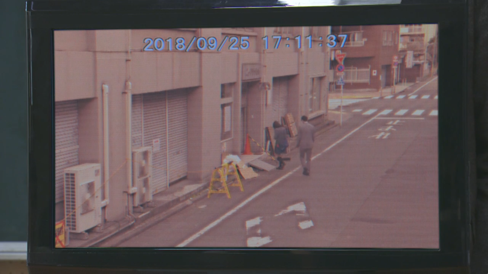
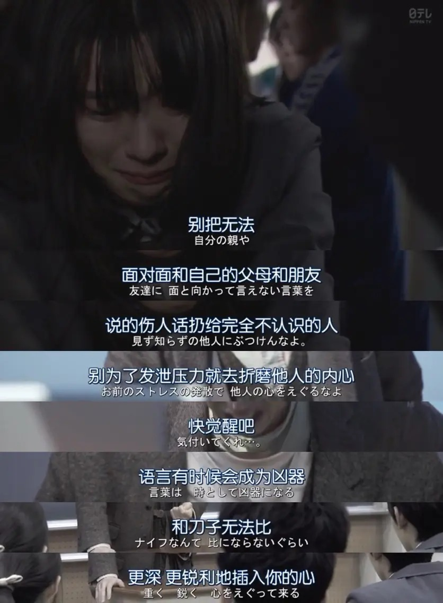

3 Nen A Gumi: Ima kara Mina-san wa, Hitojichi Desu, in short, 3 Nen A Gumi, also known as Mr. Hiiragi’s Homeroom, is a JDrama about a homeroom teacher Ibuki Hiiragi held hostage of his students in order to reveal the truth behind the suicide of a student called Reina Kageyama.
The main message that this drama wanted to convey is how easily people can get hurt without us noticing it. These days, the majority of people spend a large portion of time on the internet. Social media is one of the categories where people spend most of their time when they are on the internet. As social media allows anyone to share any piece of information, a malicious individual can use it to their own advantage by spreading false information of someone and hopefully in turn, hurting the target.
SPOILER ALERT!!! The following summary consists of spoilers, please proceed with caution.
Summary
At the beginning of the drama, the homeroom teacher of the 3A class create some explosions in the school and held his student hostage. He then asks his student to find out the truth behind the suicide of Reina Kageyama. On the other hand, he also asked for a large amount of attention on a social platform called SNS MindVoice. Slowly, one truth follows by another are revealed to not only the student but also the public who follow the incident on the social platform where they can get their source of information. They found out that it is a teacher called ‘hunter’ in the school that requests for the fake video of Reina Kageyama doping in order to ruin her athlete life.
At the same time, a video leaked on the internet, showing that a man who wears the same costume with the teacher Takechi on the day when Reina suicide, leading her into a building and ran out from the building alone sometime after that. It also follows with an ambulance passing by in front of the building not too long after that. Soon, everyone on the internet suspect that Takechi is the murderer of Reina. Later that day, he also forced to confess his guilt of ordering the fake video from a criminal syndicate while defending himself from physically meeting Reina on the day of her suicide. By that time, everyone on MindVoice starts calling him out for murder and asking him to die.

Few days after that, another video leaked on the internet, instead of showing evidence of Takechi being the murderer, it shows the face of Ibuki Hiiragi on the reflective mirror, indicating that he is the one who leads Reina into the building and running out alone. By that time, everyone on the MindVoice had realized that they had been tricked into believing that Takechi is the murderer and turned their hostility to Ibuki, turning him from a hero to an enemy.
In the end, it’s revealed that the video is fake. It is being produced with the intention of letting people on the internet to know why they should not come to a conclusion so easily by an unreliable source of information and they should exercise their critical thinking.
If you get stabbed with a knife, you'll bleed.
"If you get stabbed with a knife, you'll bleed. You will also feel the pain. In some cases, you can also die. That's obvious. But, today's society, to notice these obvious things, they don't have the time for it because they lead such a busy life. The thing we did to hurt others, if someone did it to us, would it hurt us too?" ― Ibuki Hiiragi
In the current world, most of the people had forgotten that their words and action can have a significant effect on others. One of the main reason I think that causes such phenomenon is due to the digitalization of human interaction which hides whatever feedback from the person one interact with which originally could have been observed when the interaction is carried out physically. When we say something that can potentially hurt a person unintentionally, if the interaction is carried out physically, we will be able to observe the reaction of the person being hurt, thus remind us to be more aware of our actions. However, the same does not apply to digital interaction, where only the direct feedback from whoever involved in the interaction can be observed.
It is because of the digitalization of human interaction which constructs people into putting a lot of attention on the numbers in the social media that does not even matter, people putting so much effort on it that it makes people lost sight on what’s matter and what’s not. People lost sight of how their words can affect others, rather focus solely on how they can increase those numbers even with the expenses of other people emotion. Although some are intentional, those which we call bully, most are unintentional. This is one big drawback from the digitalization of human interaction despite it brings us convenience.

Let's think
We can potentially cause huge damage by just acting as a node on the internet, connecting information from a person to another. So, we should be more aware when we try to spread a piece of information. Luckily, in the drama, it proposes a method that we should practice before spreading a piece of information, it is called Gu-Kuru-Pa.
"When you make an important decision, if you stay firm (Gutto), and use your mind to think (Kurutto), the right answer will pop out (Patto)." ― Ibuki Hiiragi
The main message the drama wants to deliver essentially is to raise awareness about how our online activity can deeply affect someone real life. I think the ‘Gu-Kuru-Pa’ practice recommend by the drama is so basic that most of us know we can make the best and logical decision if we stay calm and try to weight all the decision, yet it can be so easily overlooked when we do not even know that our action online can affect other people life. Of course, even with that, there is no guarantee that we can make the best decision. However, to the very least, it is the best effort we can give, and we know that we had done all we can.